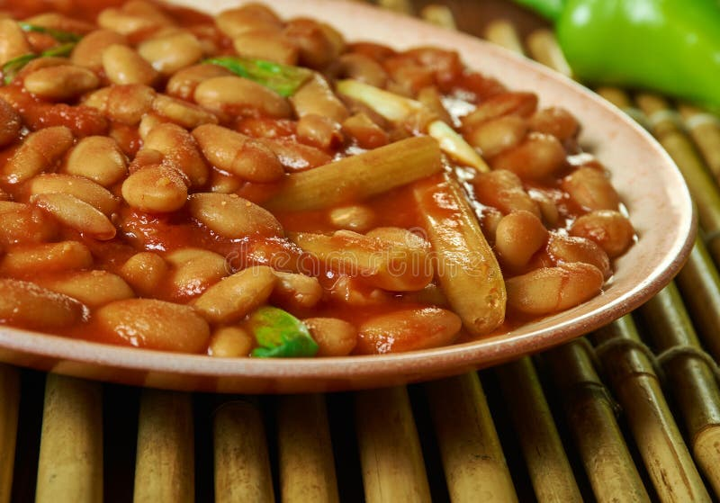

Haricot à la congolaise

Description
C'est un plat traditionnel, simple mais très savoureux,
souvent servi avec du riz, du fufu, ou de la pâte de maïs.
Les haricots deviennent tendres et s'imprègnent des saveurs de l'oignon,
de l'aie et du concetré de tomate,
avec un léger parfum d'huile de palme ou d'huile végétale.
C'est un plat riche en protéines végétale.
C'est un plat riche en protéines végétales et très réconfortant.
Ingrédients
- 250 g de haricots rouges secs (ou haricots blancs)
- 1 oignon
- 2 gousses d'aie
- 2 Tomates fraîches ou 2 cuillères à soupe de concentré de tomate
- sel et poivre
- Muscade
- 2 cuillères à soupe d'huile de palme ou d'huile végétale
- piment (optionnel)
- 1 litre d'eau
Etapes
- Fais tremper les haricots secs pendant aumoins 4heures ou toute la nuit.
- Egoutte-les, puis mets-les dans une casserole avec de l'eauet fais-les
à cuire à feu moyen pendant environ 1 heure, jusqu'à ce qu'ils deviennent tendres.
- Pendant ce temps, hache l'oignon et l'aie coupe les tomates en petits morceaux.
- Dans une pôele, chauffe l'huile et fais revenir l'oignon et
l'aie jusqu'à ce qu'ils deviennent translucides.
- Ajoute les tomates (ou le concentre), le cube de bouillon, le sel, le poivron et le piment.
laisse mijoter 10 minutes.
- Unefois les haricots cuits, ajoute le mélange d'oignons et de tomates aux haricots et
laisse mijoter encore 10 minutes pour que les saveurs se mélangent bien.
Accueil